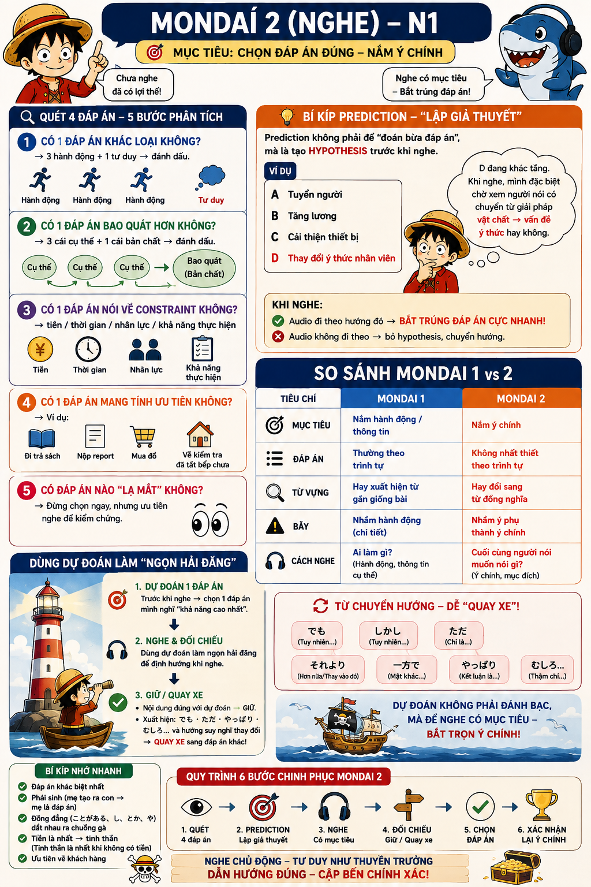

Không phải "ai làm gì" như Mondai 1 — mà là cuối cùng người nói muốn nói gì (ý chính, mục đích, kết luận thật sự).
| Tiêu chí | Mondai 1 | Mondai 2 |
|---|---|---|
| Mục tiêu | Nắm hành động / thông tin | Nắm ý chính |
| Đáp án | Thường theo trình tự | Không nhất thiết theo trình tự |
| Từ vựng | Hay xuất hiện từ gần giống bài | Hay đổi sang từ đồng nghĩa |
| Bẫy | Nhầm hành động (chi tiết) | Nhầm ý phụ thành ý chính |
| Cách nghe | Ai làm gì? (hành động, thông tin cụ thể) | Cuối cùng người nói muốn nói gì? |
Câu hỏi (đề bài) quyết định toàn bộ hướng phân tích — đọc lướt qua sẽ dễ chọn nhầm dù nghe đúng nội dung. Khi đọc/nghe câu hỏi, xác định rõ: